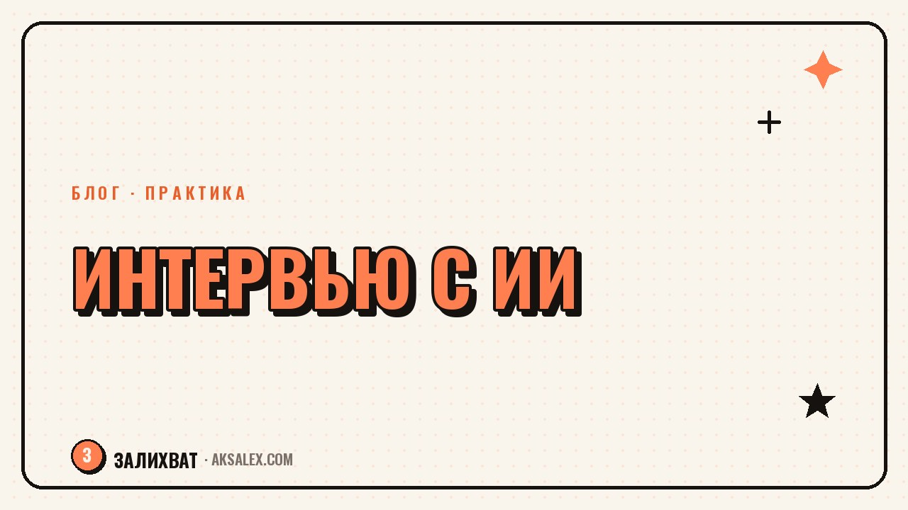

Как взять интервью для блога с помощью нейросети

Интервью - один из самых живых форматов для блога: читатели любят чужой опыт больше, чем советы от третьего лица. Проблема в том, что интервью требует много ручной работы - продумать вопросы, расшифровать запись, выбрать лучшие цитаты, собрать всё в читаемый текст. Нейросети не заменят живой разговор и твоё умение слушать собеседника, но заметно сокращают техническую часть работы после записи.
Подготовка вопросов, которые раскрывают человека
Шаблонные вопросы вроде «расскажите о себе» редко дают интересный материал - собеседник отвечает общими фразами, которые уже сто раз произносил. Нейросеть полезна на этапе подготовки: можно загрузить его посты и прошлые интервью и попросить составить список вопросов, которых ему ещё не задавали.
Хороший список вопросов строится не линейно от общего к частному, а вокруг двух-трёх конкретных историй или решений в жизни собеседника. Нейросеть может предложить такие точки входа, если дать контекст: чем человек занимается, какой у него путь, что в нём нетипично для его сферы.
Какие вопросы просить у нейросети
- Вопросы о конкретном решении или повороте в карьере, а не об общем опыте
- Уточняющие вопросы на случай, если собеседник уйдёт в общие фразы
- Один неудобный вопрос, который ты сам постеснялся бы придумать, но который сделает интервью живым
Расшифровка записи без часов ручного перепечатывания
Раньше расшифровка часового интервью занимала несколько часов ручной работы. Сейчас сервисы вроде Яндекс Браузера с расшифровкой, Otter.ai, Whisper от OpenAI или встроенные функции Zoom переводят запись в текст за несколько минут, причём с разбивкой по говорящим, если их двое.
Готовую расшифровку стоит сразу прогнать через нейросеть с просьбой убрать слова-паразиты, повторы и запинки, сохранив смысл и характерные выражения собеседника. Важно не причёсывать текст до безликости - именно живые формулировки часто становятся лучшими цитатами в итоговом посте.
Расшифровка - это сырой материал, а не готовый текст. Лучшие моменты интервью часто прячутся в неровных, неидеальных фразах, которые не стоит сглаживать до официального тона.
Как собрать пост из расшифровки
После расшифровки у тебя на руках часто пятнадцать-двадцать тысяч знаков хаотичного текста. Нейросеть может помочь найти структуру: выделить три-четыре главные темы разговора и предложить порядок подачи, который удержит внимание читателя лучше хронологического пересказа.
Полезно попросить нейросеть отдельно выписать все яркие цитаты из расшифровки - короткие, конкретные фразы, которые можно вынести в подзаголовки или оформить как блоки с цитатой. Такие вставки оживляют текст и дают читателю ощущение, что он слышит живого человека, а не пересказ.
- Попроси нейросеть выделить три-четыре смысловых блока из всей расшифровки
- Собери отдельный список цитат-кандидатов для оформления как блоков с цитатой
- Напиши связки между блоками сам - здесь твой голос рассказчика важнее автоматики
Таблица: инструменты для разных этапов работы с интервью
Для каждого этапа - от подготовки вопросов до финальной редактуры - удобнее своя комбинация инструментов, а не один универсальный сервис на всё.
| Этап | Инструмент | Что делает |
|---|---|---|
| Подготовка вопросов | ChatGPT, Gemini, YandexGPT | Предлагает нестандартные формулировки по контексту |
| Запись разговора | Zoom, диктофон телефона | Базовая фиксация звука для последующей расшифровки |
| Расшифровка | Otter.ai, Whisper, Яндекс Браузер | Текст с разбивкой по говорящим за минуты |
| Очистка текста | Любая текстовая нейросеть | Убирает слова-паразиты, сохраняя смысл и тон |
| Структура и цитаты | ChatGPT, Claude | Выделяет смысловые блоки и яркие фразы |
Что нейросеть не должна делать за тебя
Есть граница, за которую лучше не заходить: сам разговор, умение слушать и задавать уточняющие вопросы по ходу беседы, и финальная редактура, где решается, что из сказанного действительно важно показать читателю. Если доверить нейросети написание самого текста поста от начала до конца без твоего участия, результат будет звучать как пересказ, а не как интервью с конкретным человеком.
Также не стоит публиковать расшифровку как есть, даже причёсанную - интервью для блога отличается от стенограммы тем, что в нём есть драматургия: то, ради чего читатель должен дойти до конца. Эту часть работы нейросеть может подсказать, но собрать воедино лучше тебе самому, зная, что именно важно твоей аудитории.
- Держи финальное редакторское решение за собой - что оставить, что вырезать
- Сверяй цитаты с оригинальной записью перед публикацией, чтобы не искажать слова собеседника
Частые вопросы
Можно ли доверить нейросети написание всего текста интервью?
Не стоит доверять целиком - текст получится обезличенным и потеряет интонацию конкретного человека. Лучше использовать нейросеть для расшифровки, структуры и поиска цитат, а связки и финальную редактуру делать самому.
Какой сервис лучше для расшифровки интервью на русском языке?
Хорошо справляются Яндекс Браузер со встроенной расшифровкой и Whisper от OpenAI, оба понимают русскую речь с минимумом ошибок. Для интервью с двумя говорящими полезна функция разделения по голосам, если сервис её поддерживает.
Нужно ли согласовывать цитаты с собеседником перед публикацией?
Это хорошая практика, особенно если интервью касается работы или репутации человека. Отправь финальный текст с цитатами на проверку перед публикацией - это снижает риск искажения смысла и укрепляет доверие собеседника к тебе.
Как придумать вопросы для интервью, если собеседник давал уже много интервью?
Загрузи нейросети прошлые интервью этого человека и попроси составить вопросы, которых там точно не было - это экономит время на изучении материала и помогает найти неочевидный угол разговора.
Сколько времени занимает подготовка интервью для блога с нейросетью?
Подготовка вопросов и расшифровка с помощью нейросети обычно занимают час-два вместо половины дня ручной работы. Время на сам разговор и финальную редактуру текста остаётся прежним, потому что это творческая часть, которую автоматизировать сложно.
Раз тема оказалась полезной, вот что почитать следующим. Если отвечаешь клиентам в полночь и работаешь без выходных - дело не в спросе, а в границах, которых пока нет.
Читать статью →а не вручную